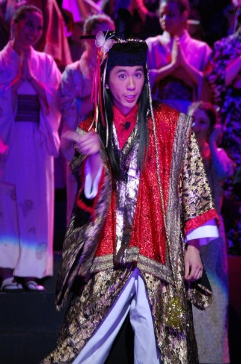
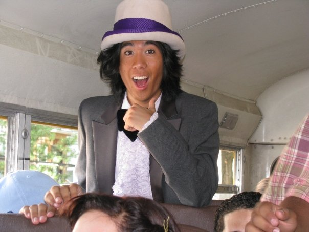
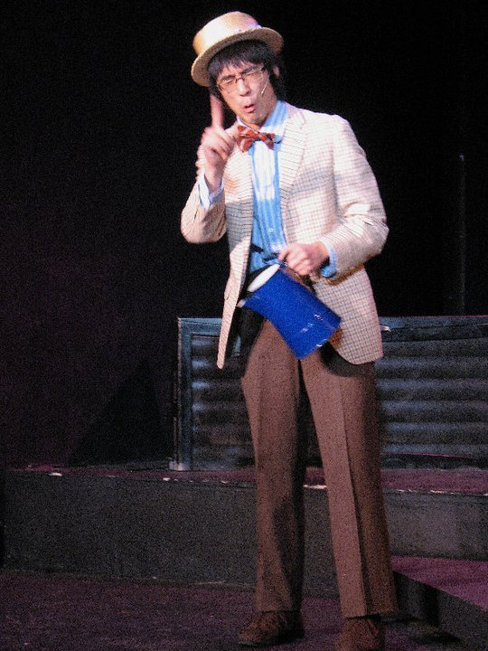

Chapter 7: Imaging, Imagining
Weird Dad Girl
- ---d-aAa-d--- -
In high school, I was bewitched by the lure of "the school musical". How grand, how impossible it all seemed, that I might be a part of such a production, singing and dancing in the spotlight! Starting my junior year, and continuing through college, I participated regularly in theatrical performances.
A peculiar pattern arises, upon reflection: I've been cast exclusively as quirky father figures! Let's take a moment to search through our "Dadabase" to see how a few of these roles stack up, statistically speaking:
THE MIKADO

SHOW:The Mikado
DAD LEVEL: ⚾⚾⚾⚾⚾ 5/5 Baseballs: The Mikado is the biological father to Nanki-Poo, a young lover disguised as a wandering minstrel. He is also the Emperor, aka the political father.
QUIRK FACTOR: ☮☮☮☮◦ 4/5 Peace Signs: The Mikado waltzes into the second act of the show, sings about his love for oddly specific criminal punishment, then disappears. At the end of the show, he reappears to deus ex machina the conflict away. Thanks, dad!
SUPER PA-WER: Implicit apologia for the show's strange racial elements by virtue of my Japanese heritage? But also one of the best experiences of my life??
- --d-a-d-- -
WILLY WONKA

SHOW: Willy Wonka and the Chocolate Factory
DAD LEVEL: ⚾⚾⚾◦◦ 3/5 Baseballs: Willy Wonka is not a literal dad. And yet, it's clear that throughout the play he acts as a kind of surrogate father figure to Chocolate Factory.
QUIRK FACTOR: ☮☮☮☮☮✄ 5/5 Peace Signs and a Pair of Scissors: Let's face it. The Wonkster is the Queen of Quirk. 'Nuff said.
SUPER PA-WER: We got to perform a modified version of the show (which included Winnie the Pooh) for the children's hospital which once housed our production's very own director. Also the director's son played Mike Teavee, so... Dad.
- --d-a-d-- -
BELLAMY

SHOW: The Fantasticks
DAD LEVEL: ⚾⚾⚾⚾◦ 4/5 Baseballs:Sure, Bellamy is technically Luisa's father. But I'm subtracting one baseball because maybe Bellamy is a mom? Think about it.
QUIRK FACTOR: ☮☮☮☮☮ 5/5 Peace Signs: Bellamy is revealed to be a button-maker literally just because it sounds funny, it never comes up again. He spends the whole play singing about watering vegetables.
SUPER PA-WER: Working on this show was how I really got to know Alex, my long time partner. They were playing the harp.
- --d-a-d-- -
Over time, I've felt all different ways about my typecasting. At various points in my real life, I've perhaps played a role of someone who could be relied upon to be safe, responsible, and non-sexual—a quirky dad among my peers. In reality, I wasn't actually non-sexual, it was just that my sexuality was partitioned so as to have as little impact as possible on the rest of my life.
My long-time partner, Alex, said that they had a hard time seeing me as a sexual being. They knew that I masturbated and watched porn, but couldn't really wrap their head around it. They were hesitant about our relationship at first, because it lacked the physical spark that they'd usually look for.
Other times that people have been interested in me, there has often been a similar sort of expectation of my non-sexual nature. I've learned that I'm a bit of an ace magnet on OK Cupid.
And, it makes sense? I don't think there's anything particularly unfair about it. Like, historically I never really put thought/work into my appearance, and for a lot of my life I wanted to both seem and be as nonsexual as people treated me. In a lot of ways, sex simply wasn't/isn't a priority to me, and that shows.
I also get a little overwhelmed by how often sexual dynamics can make many aspects of life more dangerous or oppressive in particularly traumatic ways. Or if not that, then simply more stressful and complicated. And I'll think to myself, "maybe it's better to just be that 'safe' person, maybe it's better not to develop myself in this way."
But as time goes on, that doesn't seem to be quite the right angle for me either. I think I'd like sex. And I like being especially cute some of the time and having people take interest in me. It makes me feel good, and it expands the ways I feel about myself.